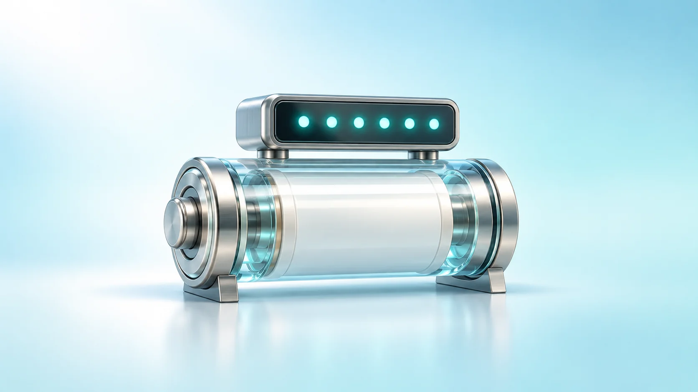
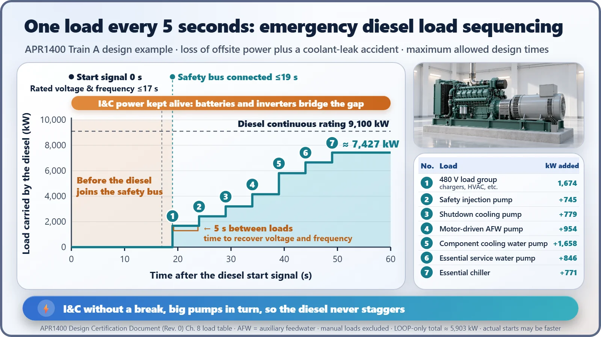

Safety Principles & Accident Analysis · 213
49 Seconds After the Lights Go Out — Loss of Offsite Power and the Safety Systems That Take Over
When the grid connection drops, the plant does not go dark: batteries bridge the gap, diesels take over in sequence, and every safety train has a twin behind a wall.

A loss of offsite power (LOOP) is an event in which a nuclear plant loses the electricity it receives from the outside grid. The reactor shuts down automatically, and onsite emergency power takes over: batteries keep protection and instrumentation alive without a break, emergency diesel generators start within seconds and pick up the big pumps one by one, and gravity, inertia and steam do the most urgent jobs without AC power. Everything comes in several independent trains.
49 seconds after the lights go out
At 0 seconds, the electricity from the outside transmission lines cuts out. Within seconds the reactor shuts down. At 17 seconds, a huge standby diesel engine reaches full speed. At 19 seconds, its power is connected to the cables reserved for safety equipment. By 49 seconds, the last piece of equipment has received power.
That scene follows the "maximum allowed times" in the design of South Korea's newer APR1400 reactor, counting from the emergency generator's start signal.[4] Today's story is who takes over the electricity in those 49 seconds, and in what order: a loss of offsite power and the safety systems that answer it.
Why would a power plant worry about a blackout?
It sounds odd for a place that makes electricity. But when the reactor shuts down, its generator stops too. The problem is that the fuel keeps giving off heat even after the reactor stops. That's decay heat, about 6–7% of the original power right after shutdown. The pumps and valves that remove this heat, and the instruments that keep watch, all run on electricity.
So a nuclear plant also takes electricity from the outside grid in normal operation. An event in which that outside supply is lost is called a loss of offsite power (LOOP), or simply a blackout accident. Typical causes are typhoon-damaged transmission lines or substation faults. In US statistics it has happened roughly once every few decades per reactor.[5]
First, the jobs that need no electricity
Interestingly, the most urgent jobs are designed to work without AC power.
- Shutting down the reactor: in a pressurized water reactor, electromagnets hold the control rods from above. When the power goes, they let go, and the rods fall by gravity into the core. It's a design that fails toward the safe side.
- Inertia and natural circulation: the big pumps that drive the cooling water keep spinning for a while thanks to heavy flywheels. After they stop, as long as the steam generators keep drawing heat away, the water circulates by itself, driven by the height difference between the hot core (below) and the cooling steam generators (above). This is called natural circulation.
- Pumps driven by steam: some of the auxiliary feedwater pumps, which supply water to the steam generators, are driven by a steam turbine instead of an electric motor. In effect, steam made by the reactor turns the pump. Only the controls that open and close valves use a little battery power.
Where does the heat go? The condenser is hard to use once its seawater pumps stop, so steam from the steam generators is released to the sky through atmospheric dump valves, taking the heat with it. A white column of steam rising from a plant at such a time is actually a sign that heat is being removed properly.
Two layers, just like an operating room: batteries and diesels
When the power fails in a hospital operating room, critical equipment such as patient monitors rides through on an uninterruptible power supply (UPS), and the emergency generator usually starts delivering power within about 10 seconds. A nuclear plant is built exactly the same way.
The emergency diesel generator is the muscular power source that can drive large pumps rated in thousands of kW. But it's a huge engine, so it takes time to start and settle its voltage and frequency. US standard technical specifications set within 10 seconds;[3] the APR1400 design basis is rated output within 17 seconds and connection within 19 seconds.[4] Each reactor type sets the value to match the times assumed in its accident analysis, which is why they differ.[2]
The gap is filled by batteries. Normally they just sit on charge; the moment AC power is lost, they take over without a break, keeping the plant's brain and nerves alive: protection systems, instruments and breaker operation, with inverters turning DC into AC for the instrumentation and control equipment. Keep in mind that the batteries do not drive the big pumps.
Switch everything on at once and the breaker trips
Ever switched on the air conditioner, the electric stove and a hair dryer at the same time, only to have the breaker click off? A large motor draws several times its normal current at the moment it starts. A diesel generator is much smaller than the grid, so if you hang all the pumps on it at once, the voltage sags and the engine staggers.
So the loads are sequenced. They are brought on one at a time, a few seconds apart, and the next load goes on only after voltage and frequency have recovered. US regulatory guidance requires that, throughout loading, voltage never drop below 75% of rated and frequency never below 95%.[2]
Take one APR1400 train under the toughest design condition: a blackout combined with a coolant-leak accident. The moment the diesel connects, small loads such as the battery chargers and control room air conditioning come on first. Five seconds later comes the safety injection pump that pushes in coolant, then the shutdown cooling pump, the motor-driven auxiliary feedwater pump, the component cooling water pump, the essential service water pump that cools it in turn, and the chiller, one every five seconds. In 30 seconds the load reaches about 7,427 kW, comfortably inside this diesel's continuous rating of 9,100 kW. The most urgent jobs come first.[4]

| Step (after bus connection) | Load | kW added | Cumulative kW |
|---|---|---|---|
| 0 s | 480 V load group (chargers, HVAC, etc.) | 1,674.1 | 1,674.1 |
| 5 s | Safety injection pump | 744.8 | 2,418.9 |
| 10 s | Shutdown cooling pump | 779.2 | 3,198.1 |
| 15 s | Motor-driven auxiliary feedwater pump | 954.1 | 4,152.2 |
| 20 s | Component cooling water pump | 1,657.8 | 5,810.0 |
| 25 s | Essential service water pump | 846.3 | 6,656.3 |
| 30 s | Essential chiller | 770.9 | 7,427.2 |
One more set, and a wall between them
What if the diesel happens not to start that day? That's why safety systems are organized in trains. A train is one complete string of power supply and equipment, from the diesel, cables and batteries down to the pumps. Having several such sets is called redundancy. Regulatory criteria require that the safety functions survive even if any one component fails (a single failure).[1] The APR1400 splits its safety equipment into two main divisions with two trains each, so it has four safety-grade diesels in all. It is laid out so that even one surviving division can shut the reactor down and cool it safely.
But if all those sets sat in one room, a single fire could take them all out. So the trains' safety buses are not tied to one another, and they use separate rooms and cable routes. That is independence. The outside power also comes in on two physically independent circuits.[1]
![Single-line diagram: the power grid feeds a switchyard through two lines, transformers feed safety bus A and safety bus B with no direct link between them; each bus has its own diesel connected within 19 seconds, pumps and valves, a charger, a 125 V DC bus, a battery and an inverter supplying uninterrupted 120 V AC instrumentation and control; below, two diesel rooms separated by a firewall; at right, control rods, coolant flow and a steam-driven feedwater pump as means that work without AC power](../../assets/images/theory/213-loss-of-offsite-power-safety-systems/fig2-two-train-power-structure.webp)
"Isn't a blackout a big deal?"
A loss of offsite power is an event that nuclear plant design assumes from the very start. Designers even assume a coolant-leak accident at the same moment, and build the time needed for diesel startup and load sequencing directly into the accident analysis. One easily confused term: in a "load rejection," the electricity the plant was sending out to the grid is suddenly cut off, the opposite direction from a loss of offsite power, where the electricity it was receiving is lost. Shutting down the reactor isn't a blackout either. Still, a loss of offsite power isn't something to take lightly. The harsher case, where the outside power and the emergency diesels are all lost, has its own preparations, and that's a story for another day.
The 49 seconds in one line
In short: when the power goes, gravity, inertia and steam move first, the batteries hold on to the brain, and the diesels rush in to wake the big pumps one by one. And all of it comes in several sets, kept apart from one another. In the end, a nuclear plant's preparation for blackouts is the art of making things "carry on even when cut off."